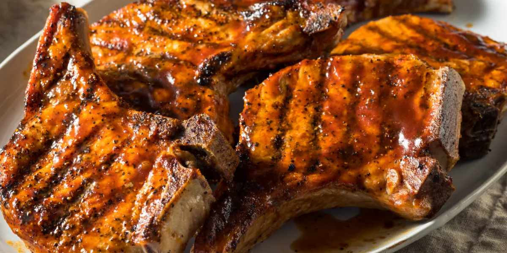

Grilled Pork Chop

Make your mouth water with with perfectly grilled Pork chops! Perfect for the next bbq!
Ingredients
- Thawed bone-in pork chops
- Favorite chop seasoning
- Grill
Instructions
-
Use seasoning on both side of pork chop 5 to 20 minutes before grill time! (the longer the wait, the better!)
-
Preheat grill to between 400F and 450F
-
Place chops on grill and let cook for 5 minutes
-
After 5 minutes, flip chops over and cook again for 5 minutes
-
Flip chops over again, and cook an additional 3 minutes
-
Flip one last time and cook for final 3 minutes to finish
-
Remove chops from grill and let sit for 5 minutes before serving
Home